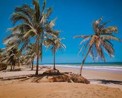
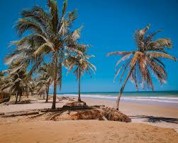

A PRAIA
Entre coqueirais infinitos e falésias avermelhadas, no trecho mais preservado do litoral sul de Alagoas, está escondida uma joia ainda pouco explorada: a Praia Miai de Cima. Situada no município de Coruripe, essa praia encanta pelo visual rústico, a natureza intocada e a tranquilidade que convida ao descanso e à contemplação. Diferente de outros pontos turísticos mais movimentados do estado, Miai de Cima mantém um ar selvagem e pacato. A praia é extensa, de areia clara e fofa, ladeada por um mar azul-esverdeado que varia de tom conforme a luz do dia. É um cenário cinematográfico, daqueles que fazem o visitante esquecer do tempo e simplesmente respirar fundo. O nome curioso, “Miai”, tem origens indígenas e é usado para se referir a uma série de praias dessa região, divididas entre Miai de Baixo, Miai de Cima e outras pequenas enseadas ao redor. Miai de Cima se destaca por seu acesso um pouco mais isolado, o que contribui para a preservação da paisagem e o menor fluxo de turistas. Para chegar até lá, é comum enfrentar estradas de terra e trechos que cruzam pequenos povoados. Mas o trajeto faz parte da experiência: pelo caminho, é possível observar a vida simples do interior alagoano, plantações de coqueiros, casas de barro, crianças brincando descalças e o ritmo calmo de uma comunidade que vive em harmonia com a natureza. O som predominante em Miai de Cima é o das ondas quebrando suavemente na areia e o canto dos pássaros que voam entre os coqueiros. É um lugar quase sem interferência humana: poucas casas, nenhuma construção grande, e um horizonte amplo que convida à reflexão. Muitos visitantes descrevem a experiência como um retorno às origens, uma forma de se reconectar com o essencial. Apesar de sua rusticidade, Miai de Cima começa a atrair olhares de viajantes em busca de praias alternativas. A ausência de grandes estruturas turísticas é, na verdade, um dos maiores atrativos. Sem bares agitados, música alta ou comércio invasivo, o visitante encontra espaço para meditar, caminhar longas distâncias na areia ou simplesmente estender uma canga e observar o mar. Durante a maré baixa, pequenas piscinas naturais se formam entre os recifes, permitindo banhos relaxantes e seguros. Já na maré alta, o mar se mostra mais forte, com ondas perfeitas para quem pratica esportes como o bodyboard e o surf em dias específicos. Pescadores locais também aproveitam esse movimento para lançar suas redes e anzóis, mantendo viva a tradição da pesca artesanal. Miai de Cima é também um dos pontos preferidos das tartarugas marinhas para desova. Por isso, iniciativas ambientais vêm ganhando força, especialmente entre moradores e visitantes que entendem a importância de proteger esse santuário natural. Durante determinadas épocas do ano, é possível ver os ninhos demarcados na areia, protegidos por cercas e placas informativas. Ao redor da praia, a vegetação nativa ainda é bastante preservada. Além dos coqueirais, há trechos de restinga, pequenos riachos e áreas de mangue, que sustentam uma rica biodiversidade. É comum avistar aves como garças, maçaricos e até falcões, além de lagartos e caranguejos que correm entre os arbustos e as dunas. A culinária local pode ser apreciada nas casas de famílias da região ou em pequenos estabelecimentos rústicos que preparam pratos com produtos frescos do mar. Camarão, peixe grelhado, siri mole, pirão e arroz de polvo são algumas das delícias servidas com simplicidade e muito sabor. Comer com os pés na areia, em mesas improvisadas à sombra de um coqueiro, faz parte do charme do lugar. A hospitalidade dos moradores é outro ponto que merece destaque. Mesmo com a simplicidade da vida local, ou talvez por causa dela, o povo de Miai de Cima recebe os visitantes com um sorriso no rosto e histórias para contar. Muitos vivem da pesca, da agricultura familiar ou do pequeno comércio, e veem no turismo sustentável uma oportunidade de desenvolvimento sem perder a identidade. Quem visita Miai de Cima frequentemente se sente parte de um segredo bem guardado. É um lugar onde não há pressa, onde se pode ver o nascer do sol em completo silêncio, sentir o vento carregado de sal e caminhar por quilômetros sem cruzar com ninguém. Um verdadeiro convite à introspecção, ao contato com o natural e à valorização do que é simples. Nos finais de tarde, o espetáculo do pôr do sol colore o céu com tons de laranja, rosa e roxo, refletindo no mar e nas falésias que dominam o horizonte. É o momento preferido de quem busca fotografias ou apenas quer apreciar a natureza em sua forma mais pura. À noite, a escuridão quase total permite um céu estrelado de tirar o fôlego. Sem poluição luminosa, a Via Láctea pode ser vista com nitidez, criando um clima mágico e íntimo. Muitos visitantes optam por acampar ou se hospedar em pequenas pousadas e casas de moradores, vivendo dias de conexão com o ambiente e desconexão do mundo moderno. Praia Miai de Cima é um daqueles lugares que nos lembram de que a beleza ainda está nos cantos menos badalados. Um paraíso escondido que preserva suas raízes, seu silêncio e sua natureza bruta. Um destino perfeito para quem valoriza autenticidade, paz e a beleza de um litoral que ainda resiste ao tempo e ao progresso desordenado. Visitar Miai de Cima é mais do que uma viagem: é uma experiência sensorial, espiritual e cultural. É ouvir o mar conversar com as pedras, sentir o cheiro do mato molhado pela maresia e descobrir que a simplicidade pode ser o maior luxo de todos.
FOTOS
 
